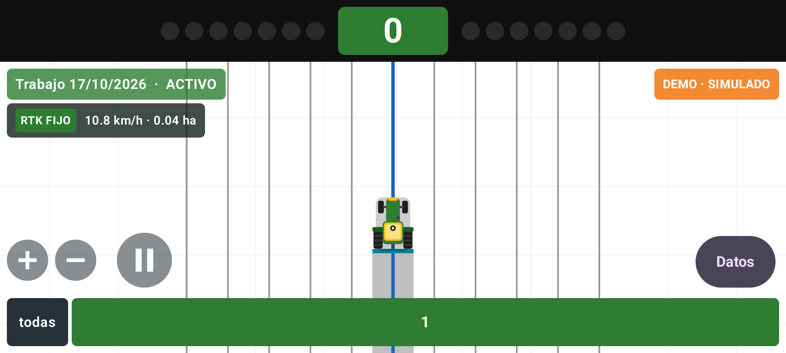
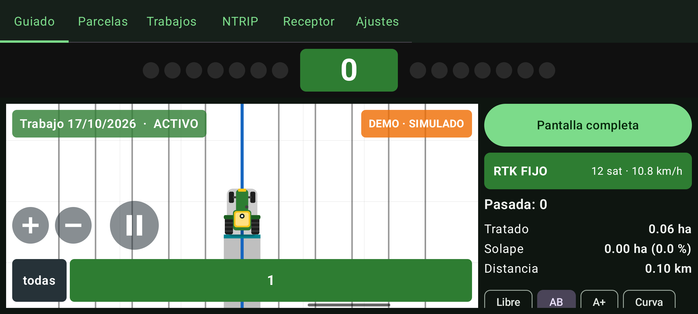
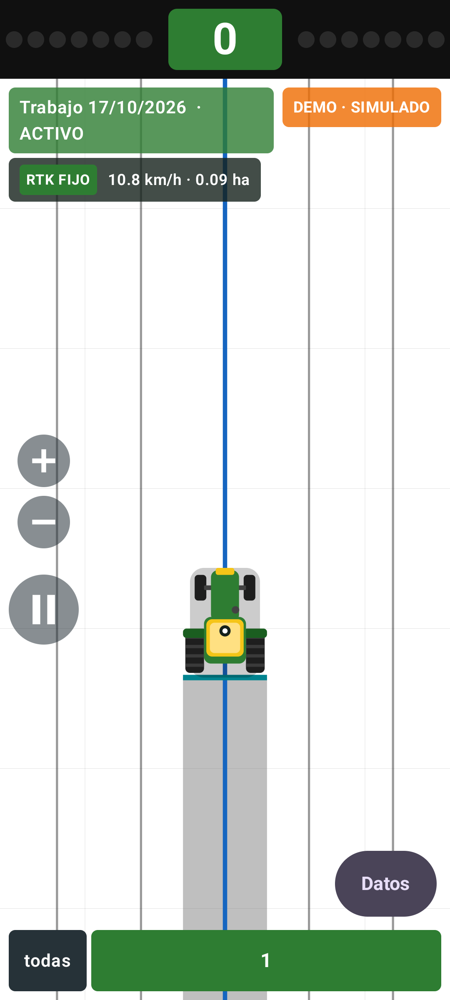

Guiado agrícola de precisión centimétrica para Android. Configuración, uso en campo y resolución de problemas, explicado paso a paso.
Si es tu primera vez, sigue las secciones 1 a 5 en orden: en unos minutos tendrás el receptor conectado y guiando. El resto son referencias que puedes consultar cuando las necesites.
AgroGuide RTK convierte tu móvil o tablet Android en un sistema de guiado agrícola de precisión centimétrica. Se conecta por Bluetooth a un receptor GNSS RTK, recibe correcciones por internet y te muestra en pantalla por dónde has pasado y por dónde debes pasar, evitando solapes y huecos.
Líneas rectas, por rumbo, curvas grabadas y modo libre, con salto automático a la pasada más cercana.
Pintado en tiempo real de lo tratado, con el solape en otro color y contadores de hectáreas.
Hasta 16 tramos del apero que puedes abrir y cerrar a mano; solo pinta lo que está activo.
Cliente de correcciones v1 y v2 con perfiles, explorador de estaciones y reconexión automática.
Mide parcelas, graba faenas completas y genera informes en HTML y PDF con el recorrido.
La vista de campo no necesita internet. Los mapas son opcionales y se pueden descargar antes de salir.
| Elemento | Detalle |
|---|---|
| Móvil o tablet | Android 8.0 o superior. Funciona en horizontal o en vertical; una tablet permite ver más campo. |
| Receptor GNSS | ArduSimple RTK Portable Bluetooth Kit (u-blox ZED-F9P) u otro receptor que emita NMEA por Bluetooth SPP. |
| Correcciones RTK | Acceso a un servidor NTRIP (el del IGN es gratuito en España, previo registro). Sin ellas funciona, pero con precisión de metros. |
| Datos móviles | Solo para recibir las correcciones. El consumo es muy bajo, en torno a 1 MB cada 10 minutos. |
Cuatro piezas trabajando juntas. El receptor calcula la posición con los satélites, pero por sí solo se equivoca varios metros. La estación de referencia sabe exactamente dónde está y calcula ese error; te lo envía por internet a través del servidor NTRIP, y tu receptor lo aplica para bajar a centímetros.
Al conectar las correcciones el receptor sube por esta escala en menos de un minuto con buena visibilidad de cielo. RTK FIJO es el estado de trabajo normal; si baja a FLOAT o DGPS, revisa la cobertura de datos o si hay árboles o edificios tapando el cielo.
Configuración inicial completa. Solo hay que hacerla una vez.
La primera vez pedirá ubicación, dispositivos cercanos (Bluetooth) y notificaciones. Los tres son necesarios: sin Bluetooth no aparecerá tu receptor en la lista, y sin notificaciones no se puede mantener el guiado con la pantalla apagada.
Aparecerá un aviso sobre la optimización de batería. Acéptalo: si el sistema puede "dormir" la aplicación, dejará de grabar el trabajo cuando apagues la pantalla. En móviles Xiaomi, Huawei y Samsung el manual te indicará además el ajuste concreto de su capa de personalización.
Enciende el receptor y, desde los ajustes de Bluetooth de Android (no desde la app),
empareja el dispositivo. En el kit ArduSimple aparece como RTK_GNSS_xxxx y el PIN es
1234. Este paso solo se hace una vez.
En la pestaña NTRIP, pulsa "Nuevo perfil" e introduce los datos de tu servidor de correcciones (sección 7 de este manual). Sin este paso el guiado funciona, pero con precisión de metros en lugar de centímetros.
En la pestaña Guiado, botón "Apero": introduce el ancho de trabajo real en metros y, si procede, los desfases y el número de secciones (sección 9).
Botón "Fuente" → selecciona tu receptor Bluetooth → activa el interruptor de correcciones NTRIP → Iniciar. En unos segundos el distintivo superior derecho se pondrá verde con el nombre de tu receptor y el panel mostrará la calidad de la señal.
Es la pantalla que usarás el 95 % del tiempo. Está pensada para leerse de un vistazo desde el asiento, con los botones grandes para poder usarla con guantes.
1 · Lightbar. Tu desvío respecto a la línea, en centímetros. Se explica en la sección 5.
2 · Trabajo activo. Nombre y estado de la faena que se está grabando (verde activo, ámbar en pausa).
3 · Fuente activa. Verde con el nombre del receptor si está conectado. En naranja avisa de que estás en modo demo.
4 · Vista de campo. Fondo blanco, zona trabajada en gris y solape en rojo; pasadas en gris oscuro y la actual en azul. Los colores se cambian en Ajustes.
5 · Barra de secciones. Un botón por tramo del apero: verde abierto, gris cerrado. "todas" los abre o cierra a la vez.
6 · Estado de la señal. Calidad del fix, satélites y velocidad.
7 · Contadores. Hectáreas tratadas, solape y distancia recorrida en tiempo real.
8 · Modo y acciones. Tipo de línea y botones contextuales para marcarla.
Al iniciar un trabajo, la vista de campo pasa a ocupar toda la pantalla para que veas el máximo de terreno. Los datos siguen a un toque de distancia.



La barra de luces arriba; el nombre y estado del trabajo; un recuadro con la calidad de la señal, la velocidad y las hectáreas tratadas; el aviso de fuente y NTRIP; los botones + / − (zoom) y pausa; la barra de secciones abajo y el botón "Datos". Se ocultan las pestañas y las barras de Android (desliza desde el borde si necesitas verlas un momento).
Pulsa "Datos" para mostrar el panel completo: contadores, modos de línea, Apero y Fuente.
El botón redondo grande pausa el trabajo; en pausa se vuelve ámbar con el símbolo ▶ para reanudar. "Pantalla completa", el primer botón del panel, vuelve a esta vista.
La barra de luces es la herramienta principal de guiado: te dice cuánto te has desviado y hacia dónde corregir, sin necesidad de leer ningún número.
| Aspecto | Desvío | Qué significa |
|---|---|---|
| Recuadro verde | menos de 5 cm | Estás en la línea. Mantén el volante firme. |
| Luces verdes | 10 – 30 cm | Desvío leve. Corrige suavemente, sin brusquedad. |
| Luces ámbar | 30 – 50 cm | Te estás separando. Corrige ya o dejarás un hueco o un solape visible. |
| Luces rojas | más de 50 cm | Desvío grande. Si continúa, revisa si te has saltado a la pasada contigua. |
| Guion (—) | — | No hay línea de guiado activa o no hay posición. Marca una línea AB para empezar. |
La fuente es de dónde saca la aplicación la posición. Se elige con el botón Fuente de la pantalla de guiado y hay que pulsar Iniciar para arrancarla.
Recomendada
La app abre el enlace con el receptor, interpreta sus datos y le envía las correcciones. Es la única opción que alcanza precisión centimétrica real.
Usa el GPS interno del móvil. Sirve para probar la aplicación o para trabajos donde bastan unos metros de precisión. También recoge la señal de aplicaciones externas que simulan posición.
Un tractor virtual que avanza solo. Sirve para aprender a usar la aplicación en casa, sin hardware. No es una posición real.
| Característica | Bluetooth RTK | Ubicación Android | Demo |
|---|---|---|---|
| Precisión | 1 – 3 cm | 2 – 5 m | Simulada |
| Frecuencia | Hasta 10 Hz | Variable | 5 Hz |
| Admite NTRIP | Sí | No | No |
| Utilidades de receptor | Sí | No | No |
| Necesita hardware | Sí | No | No |
Si el receptor se apaga, se aleja o el enlace se corta, la aplicación lo detecta en 5 segundos y empieza a reintentar la conexión, espaciando los intentos progresivamente (1 s, 2 s, 4 s… hasta 1 minuto) para no agotar la batería. Cuando el receptor vuelve a estar disponible, se reconecta sola y el trabajo continúa sin que tengas que tocar nada.
Es lo que convierte un GPS normal en un sistema centimétrico. Sin correcciones el receptor se equivoca varios metros; con ellas, unos pocos centímetros.
Ve a la pestaña NTRIP y pulsa "Nuevo perfil". Rellena los campos con los datos que te haya facilitado tu proveedor de correcciones:
| Campo | Qué poner |
|---|---|
| Nombre del perfil | Un nombre para reconocerlo, por ejemplo "IGN León". Es solo para ti. |
| Servidor | La dirección del caster, sin http://. Por ejemplo rtk2go.com. |
| Puerto | Casi siempre 2101. Te lo indica el proveedor. |
| Mountpoint | La estación concreta. Pulsa "Explorar mountpoints" para verlas todas y elegir la más cercana a tu parcela. |
| Usuario y contraseña | Las credenciales del servicio. Algunos servidores públicos no las necesitan. |
| NTRIP v2 | Actívalo solo si tu proveedor especifica la versión 2 del protocolo. Si no lo sabes, déjalo desactivado. |
| Enviar GGA | Necesario en estaciones virtuales (VRS), que generan la corrección a medida para tu ubicación. Déjalo activado si tienes dudas. |
| Intervalo GGA | Cada cuántos segundos se envía tu posición al servidor. 10 es un valor adecuado. |
Recomendado en España
Red oficial del IGN, gratuita y con cobertura en toda España. Requiere registro:
pide usuario y contraseña en ign.es; sin ellos el servidor rechaza la conexión.
ergnss-tr.ign.es: soluciones de red (VRS3, MAC3…), con "Enviar GGA".
ergnss-ip.ign.es: estaciones individuales. Puerto 2101.
Solo para pruebas
Servidor comunitario donde particulares comparten sus propias bases. Para recibir correcciones no hace falta registrarse:
Servidor rtk2go.com · Puerto 2101
Usuario: tu correo electrónico · Contraseña: none
Depende de que haya un voluntario con una base cerca de tu zona y no ofrece garantía de servicio.
Tener un perfil creado no basta: hay que activarlo y encender el interruptor.
En la pestaña NTRIP, marca el círculo del perfil que quieras usar. Ese será el perfil activo.
Vuelve a Guiado → Fuente, elige tu receptor Bluetooth y activa el interruptor "Correcciones NTRIP".
Pulsa Iniciar. Verás el indicador "NTRIP: conectado" en verde con los kilobytes recibidos aumentando.
| Señal | Interpretación |
|---|---|
| NTRIP: conectado · N KB | Correcto. Si los KB no suben, el servidor acepta la conexión pero no envía datos: revisa el mountpoint. |
| Edad corr. por debajo de 5 s | Las correcciones llegan con fluidez. Es el valor normal de trabajo. |
| Calidad RTK FIJO | Objetivo alcanzado. Precisión centimétrica. |
| Mensaje con el motivo | La app muestra el motivo que da el servidor (credenciales, mountpoint, servidor inaccesible…). Corrige ese dato; mientras, reintenta sola. |
La pestaña Receptor permite configurar el ZED-F9P directamente desde la aplicación, sin cables ni programas de ordenador.
Sube la frecuencia de posición de 1 a 5 veces por segundo y desactiva las frases de satélites en vista, que ocupan mucho ancho de banda y no se usan para guiar.
Resultado: el tractor se mueve mucho más fluido en pantalla y el lightbar responde antes, con menos tráfico por Bluetooth.
Devuelve los parámetros que toca la aplicación a su estado original: 1 posición por segundo y frases de satélites activadas.
Úsalo si vas a emplear el receptor con otro programa que espere la configuración estándar.
Tras pulsar el botón, el receptor responde y la aplicación te muestra un mensaje en la parte inferior:
| Mensaje | Significado |
|---|---|
| Receptor configurado ✓ | El receptor aceptó el comando y ya está aplicado. |
| El receptor rechazó el comando | El modelo no admite alguno de los parámetros. La configuración anterior se mantiene. |
| Sin respuesta del receptor | No contestó en 3 segundos. Comprueba que el enlace Bluetooth sigue activo. |
Es la configuración que más afecta a la calidad del trabajo. Si el ancho no es exacto, las pasadas no encajarán y tendrás huecos o solapes constantes.
| Campo | Cómo medirlo |
|---|---|
| Ancho de trabajo | El ancho real que trabaja el apero, en metros. En una sembradora, la distancia entre la primera y la última línea más una separación entre líneas. Es el dato más importante. |
| Desfase lateral | Cuánto está desplazado el centro del apero respecto a la antena. Positivo hacia la derecha, negativo hacia la izquierda. Déjalo en 0 si el apero va centrado. |
| Antena → apero | Distancia desde la antena hasta donde trabaja realmente el apero. Positivo si va detrás (lo habitual en aperos arrastrados o suspendidos). |
| Secciones | En cuántos tramos independientes se divide el ancho, de 1 a 16. Se reparten por igual y se numeran de izquierda a derecha en el sentido de la marcha. |
6,5 o 6.5 indistintamente.La línea es la referencia que sigues. A partir de ella, la aplicación genera automáticamente todas las pasadas paralelas separadas exactamente por el ancho de tu apero.
El modo habitual. Conduce hasta un extremo, pulsa Marcar A, recorre la pasada y pulsa Marcar B en el otro extremo. La recta entre ambos define todo el trabajo.
Marca un único punto y la línea se traza en la dirección en la que estás circulando en ese instante. Útil cuando ya sabes la orientación exacta o quieres repetir la de un trabajo anterior.
Pulsa Grabar curva y conduce la primera pasada como quieras: en curva, siguiendo un lindero o una acequia. Al pulsar Fin curva se generan las pasadas paralelas a esa forma.
Sin línea de referencia. La aplicación sigue pintando la cobertura y contando hectáreas, pero el lightbar no muestra desvío. Útil para trabajos sin pasadas definidas.
Mientras avanzas, la aplicación va pintando la superficie que trabaja el apero. Es la forma más directa de ver qué te falta y de evitar pasar dos veces por el mismo sitio.
En el panel derecho se actualizan en tiempo real:
Un porcentaje de solape por debajo del 3 % indica un trabajo muy bien ejecutado. Por encima del 10 % conviene revisar si el ancho configurado es correcto.
Si has configurado varias secciones, aparece una barra en la parte inferior de la vista de campo con un botón por tramo. Toca cualquiera para abrirlo o cerrarlo:
Verde significa abierta y pintando; gris, cerrada. El botón "todas" abre o cierra todas a la vez. Es especialmente útil al rematar cabeceras o al entrar en una cuña, donde solo trabaja parte del apero.
Guarda el contorno de tus fincas para conocer su superficie exacta y poder asociarlas a los trabajos que realices en ellas.
El método más preciso. En la pestaña Parcelas: Nueva parcela → Conducir perímetro. Recorre el contorno de la finca y, al volver al punto de partida, pulsa Cerrar parcela.
La aplicación va registrando el recorrido del punto de trabajo del apero, no de la antena, así que el contorno coincide con lo realmente cultivable.
Más rápido para parcelas rectangulares. Nueva parcela → Marcar puntos y toca las esquinas sobre la vista de campo. Con un mapa de fondo activado (sección 14) puedes dibujarla siguiendo la imagen de satélite.
Necesitas un mínimo de 3 puntos.
Al cerrar la parcela se te pide un nombre y la aplicación calcula automáticamente su superficie en hectáreas y su perímetro en metros.
| Acción | Detalle |
|---|---|
| Exportar GeoJSON | Formato estándar para programas de SIG y agricultura de precisión. Se abre el menú para compartir por correo, mensajería o guardar en la nube. |
| Exportar KML | Compatible con Google Earth y la mayoría de programas de mapas. Ideal para ver tus parcelas en el ordenador. |
| Importar | Admite ambos formatos. Útil para cargar los recintos SIGPAC que te haya facilitado tu técnico o cooperativa. |
| Renombrar / eliminar | Disponibles en cada parcela del listado. La eliminación pide confirmación. |
Un trabajo graba toda la faena: el recorrido completo, la cobertura, el tiempo efectivo y las hectáreas. Al terminar puedes generar un informe para tu archivo o para el cliente.
Nuevo trabajo: en la pestaña Trabajos, ponle nombre y, opcionalmente, asígnale una parcela. Pausar detiene el pintado y la grabación mientras te desplazas o repostas. Finalizar cierra el trabajo y guarda sus estadísticas definitivas.
En el histórico, cada trabajo finalizado ofrece dos botones: Informe HTML (se abre en cualquier navegador) e Informe PDF (ideal para imprimir o archivar). Ambos incluyen:
Nombre, parcela asociada, fecha y duración efectiva (sin contar las pausas).
Superficie tratada, solape en hectáreas y porcentaje, superficie de la parcela, ancho de apero, velocidad media y distancia recorrida.
Además se incluye una miniatura del recorrido realizado, que permite ver de un vistazo la forma del trabajo ejecutado.
Si una faena se queda a medias, puedes reabrirla otro día y seguir exactamente donde la dejaste. No hace falta hacer nada especial al terminar: la aplicación ya guarda cada posición del tractor.
Pestaña Trabajos → Histórico. Cada trabajo finalizado tiene el botón "Continuar", junto a los de informe.
La aplicación pide confirmación. Si el apero configurado ahora tiene otro ancho, lo avisa: el trabajo sigue con el ancho con el que se empezó, para que todo encaje.
Se vuelve a pintar todo lo ya hecho, con sus hectáreas, solape y distancia, y se recupera la línea de guiado de ese trabajo, así las pasadas nuevas quedan alineadas con las anteriores. La vista pasa a pantalla completa.
Lo que trabajes después se suma al mismo trabajo: hectáreas, solape, tiempo efectivo y recorrido. Al finalizar de nuevo, el informe HTML o PDF refleja la faena completa, no solo la última parte.
De forma opcional puedes mostrar una imagen de satélite o un callejero bajo el guiado. Es muy útil para situarte en la parcela y para dibujar contornos siguiendo la imagen real del terreno.
| Opción | Coste | Cuándo usarla |
|---|---|---|
| Ninguno | — | Opción por defecto. Solo cuadrícula. Máximo rendimiento y cero consumo de datos. |
| Satélite Esri | Gratuito | La más recomendable: imagen aérea sin necesidad de clave ni registro. |
| Callejero OpenStreetMap | Gratuito | Para orientarte por caminos y accesos en lugar de por la imagen del cultivo. |
| Google Maps satélite | De pago | Requiere una clave propia de Google Cloud con facturación activada. Solo si ya dispones de ella. |
Las imágenes descargadas se guardan permanentemente en el dispositivo. Una vez que has visto una zona, sigue disponible aunque no tengas datos móviles en la parcela.
Con conexión wifi en casa, ve a Ajustes y selecciona el mapa que quieras usar.
Pulsa "Descargar zona visible". Se guardará aproximadamente 1 km alrededor de tu posición en tres niveles de detalle. Verás el progreso y el tamaño ocupado.
El mapa aparecerá aunque no haya cobertura. Si te sales de la zona descargada, esa parte quedará en negro hasta que vuelvas a tener conexión.
| Ajuste | Función |
|---|---|
| Tema | Noche (por defecto): letras claras sobre fondo oscuro, ideal para la cabina. Día: mayor contraste bajo sol directo. Automático: sigue al móvil. |
| Orientación de pantalla | Horizontal (por defecto), Vertical o Automática, que gira con el móvil. |
| Vista de campo | Color de fondo (blanco por defecto), color de la zona trabajada (gris semitransparente), color del solape (rojo), cuadrícula y vehículo: mini tractor, triángulo o cuadrado, siempre tan ancho como el apero. |
| Compensar retardo del receptor | La posición llega con 0,1–0,2 s de retraso (cálculo + Bluetooth). Automático (por defecto) lo mide y adelanta el tractor y la pintura ese tiempo; también hay Desactivado y valores fijos de 100, 200 y 300 ms. Necesita la hora automática del móvil. |
| Pausar pintado al detenerse | Desactivado (por defecto): se pinta siempre. Activado: no pinta con el tractor parado o casi parado (sección 11). |
| Mantener pantalla encendida | Evita que la pantalla se apague mientras guías. Actívalo si el móvil va conectado a corriente. |
| Salida mock | Publica la posición RTK al sistema para que otras aplicaciones la aprovechen. Requiere elegir AgroGuide como aplicación de ubicación simulada en las opciones de desarrollador. |
| Optimización de batería | Muestra si la aplicación está exenta y permite solicitarlo. Imprescindible para que el guiado sobreviva con la pantalla apagada. |
| Mapa de fondo | Selector de mapa, descarga de zona y gestión de la caché (sección 14). |
Los fallos más habituales y cómo resolverlos sin ayuda técnica.
| Síntoma | Causa probable y solución |
|---|---|
| El tractor se mueve solo en pantalla estando parado | Estás en modo demo. Comprueba el distintivo superior derecho: si aparece naranja con "DEMO", pulsa Fuente y selecciona tu receptor Bluetooth. |
| No aparece mi receptor en la lista | No está emparejado en Android o falta el permiso de dispositivos cercanos. Empareja desde los ajustes del sistema (PIN 1234) y revisa los permisos de la aplicación. |
| La calidad no pasa de GPS o DGPS | No llegan correcciones. Revisa que el interruptor NTRIP esté activado, que tengas datos móviles y que el indicador muestre kilobytes en aumento. |
| Llega a RTK FLOAT pero no a FIJO | Visibilidad de cielo insuficiente o estación de referencia demasiado lejos. Aléjate de árboles y edificios y espera uno o dos minutos. |
| No se pinta mientras estoy parado | Tienes activado "Pausar pintado al detenerse" en Ajustes. Desactívalo si quieres pintado continuo. |
| NTRIP muestra un mensaje de error | Lee el motivo: credenciales, mountpoint o servidor. En el IGN hay que estar registrado. Usa "Probar conexión" en el perfil para comprobarlo. |
| Las pasadas no encajan: huecos o solapes constantes | El ancho de trabajo configurado no coincide con el real. Vuelve a medirlo y corrígelo en el botón Apero. |
| Deja de grabar al apagar la pantalla | El sistema está durmiendo la aplicación. Concede la exención de optimización de batería en Ajustes y revisa la configuración del fabricante. |
| La pintura va por detrás del tractor | Ajustes → Compensar retardo del receptor en "Automático" (con la hora automática del móvil). Si aún se nota, prueba 200 o 300 ms. |
| El mapa aparece en negro | Sin conexión y sin teselas descargadas para esa zona. Descarga la zona con wifi antes de salir. |
| No se genera el informe | El mensaje de error indica la causa concreta. Comprueba que el trabajo esté finalizado y que tengas espacio libre en el dispositivo. |
Resumen para consultar en la cabina.
Gris tratado · Rojo solape · Azul pasada actual · Cian apero · Naranja modo demo
| Edad correcciones | menos de 5 s |
| HDOP | por debajo de 1,5 |
| Satélites | más de 12 |
| Solape aceptable | menos del 3 % |
| Distancia a la base | menos de 20 km |
| Pellizcar | Acercar o alejar el campo |
| Doble toque | Vista al rumbo / al norte |
| Botón "todas" | Abrir o cerrar todas las secciones |
| Botones + / − | Acercar o alejar con guantes |
| Botón pausa | Pausar o reanudar el trabajo |
| Botón "Datos" | Ver el panel en pantalla completa |
| Borrar línea | Eliminar la referencia activa |
Este manual describe la versión 1.0.9 de la aplicación. La interfaz puede variar ligeramente en versiones posteriores. AgroGuide RTK es un sistema de guiado visual: asiste al conductor, pero no controla la dirección del vehículo. El operador es en todo momento responsable de la conducción y de la seguridad en el trabajo.